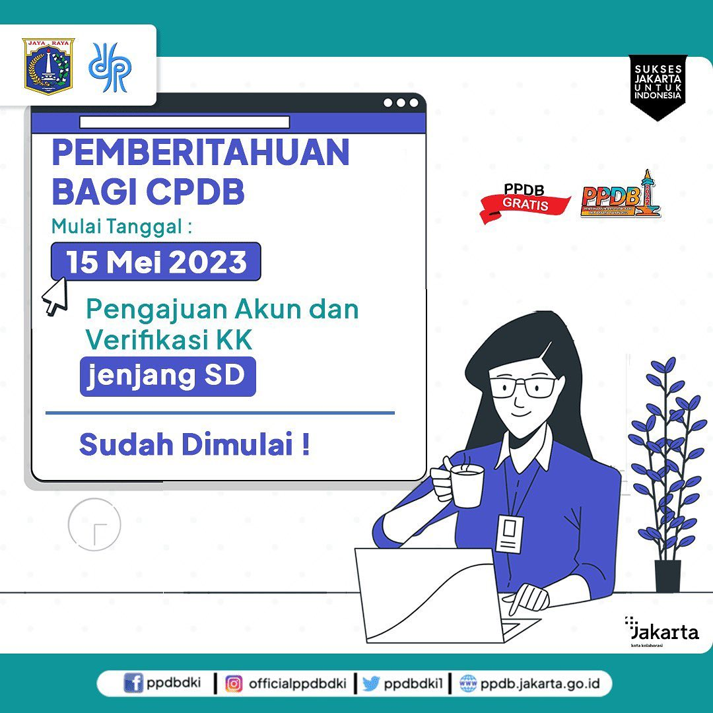
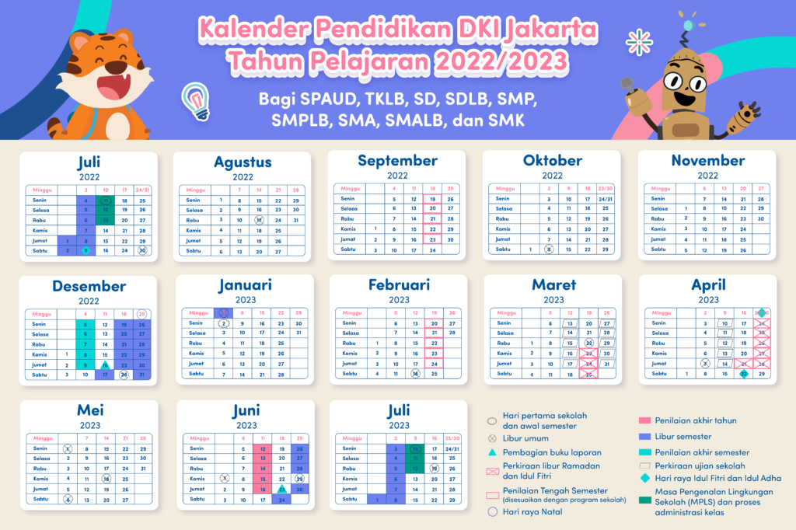

BERITA TERBARU
Menyajikan informasi di SDN Tengah 08

BERITA TERBARU
Pemberitahuan Bagi CPDB
Yuk Simak informasi berikut, bagi kamu yang ingin mengikuti PPDB Jenjang SD saat ini sudah bisa melakukan verifikasi Kartu Keluarga dan pengajuan akun
READ MORE...

BERITA TERBARU
Kalender Pendidikan DKI Jakarta Tahun Pelajaran 2022/2023
Semangat menyambut tahun ajaran baru! Semoga di tahun ajaran ini, si kecil bisa menjadi lebih baik dalam segala aspek, ya! Kalian ingin tahu kapan saja jadwal ujian, liburan, dan tanggal penting lainnya di tahun ajaran ini? Lihat kalender di bawah ini saja, ya! Kalender di bawah ini mengacu pada jadwal pendidikan di DKI Jakarta. Mohon diingat, bahwa tiap daerah bisa memiliki jadwal yang berbeda, sesuai dengan kebijakan pemerintah daerah masing-masing.
READ MORE...
BERITA TERBARU
Jadwal PPDB Jenjang SD Tahun 2023
Jadwal Pelaksanaan PPDB pengajuan akun sejak Tanggal 15 Mei 2023
READ MORE...